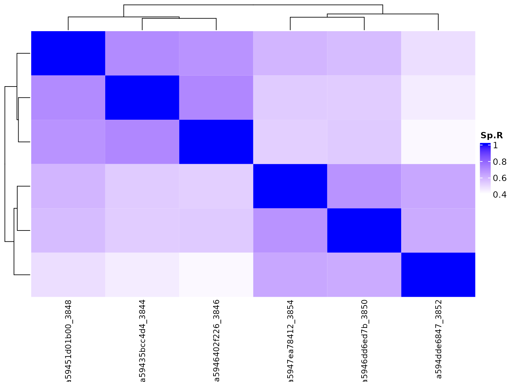

Introduction
Bambu can be used for transcript discovery and quantification from long read RNA-Seq data. Here, we present an example usage of bambu on Nanopore long read RNA-Sequencing from 2 human cancer cell lines
Data description
To demonstrate the usage of Bambu, we used the data in NanoporeRNASeq, which contains single chromosome RNA-Seq data from two common cell lines K562 and MCF7. Each of these cell line has three replicates, with 1 direct RNA sequencing data and 2 cDNA sequencing data.
data("sample_info") sample_info ##> sample_id Platform cellLine protocol ##> 1: SGNex_K562_directcDNA_replicate1_run2 MinION K562 directcDNA ##> 2: SGNex_K562_directcDNA_replicate4_run2 GridION K562 directcDNA ##> 3: SGNex_K562_directRNA_replicate6_run1 GridION K562 directRNA ##> 4: SGNex_MCF7_directcDNA_replicate1_run2 MinION MCF7 directcDNA ##> 5: SGNex_MCF7_directcDNA_replicate3_run3 GridION MCF7 directcDNA ##> 6: SGNex_MCF7_directRNA_replicate4_run1 GridION MCF7 directRNA ##> bioRep cancer_type ##> 1: replicate1 Leukocyte ##> 2: replicate4 Leukocyte ##> 3: replicate6 Leukocyte ##> 4: replicate1 Breast ##> 5: replicate3 Breast ##> 6: replicate4 Breast
Name of bamfiles can be loaded as follows
data("bamFileNames") bamFileNames ##> [1] "SGNex_K562_directcDNA_replicate1_run2_genome_chr22_1_25409234.bam" ##> [2] "SGNex_K562_directcDNA_replicate4_run2_genome_chr22_1_25409234.bam" ##> [3] "SGNex_K562_directRNA_replicate6_run1_genome_chr22_1_25409234.bam" ##> [4] "SGNex_MCF7_directcDNA_replicate1_run2_genome_chr22_1_25409234.bam" ##> [5] "SGNex_MCF7_directcDNA_replicate3_run3_genome_chr22_1_25409234.bam" ##> [6] "SGNex_MCF7_directRNA_replicate4_run1_genome_chr22_1_25409234.bam"
We then loaded bam.files.
bam.file <- system.file("extdata",bamFileNames, package = "NanoporeRNASeq") data("annotationGrangesList_chr22_1_25409234")
We applied bambu to perform EM on extended annotations
seExtended <- bambu(reads = bam.file, annotations = annotationGrangesList_chr22_1_25409234, genomeSequence = "BSgenome.Hsapiens.NCBI.GRCh38", extendAnnotations = TRUE, verbose = FALSE, ncore = 6) ##> | | | 0% | |============ | 17% | |======================= | 33% | |=================================== | 50% | |=============================================== | 67% | |========================================================== | 83% | |======================================================================| 100% ##> ##> | | | 0% | |============ | 17% | |======================= | 33% | |=================================== | 50% | |=============================================== | 67% | |========================================================== | 83% | |======================================================================| 100% seExtended ##> class: RangedSummarizedExperiment ##> dim: 1923 6 ##> metadata(0): ##> assays(2): counts CPM ##> rownames(1923): tx.1 tx.2 ... ENST00000484509 ENST00000468442 ##> rowData names(4): TXNAME GENEID eqClass newTxClass ##> colnames(6): ##> SGNex_K562_directcDNA_replicate1_run2_genome_chr22_1_25409234 ##> SGNex_K562_directcDNA_replicate4_run2_genome_chr22_1_25409234 ... ##> SGNex_MCF7_directcDNA_replicate3_run3_genome_chr22_1_25409234 ##> SGNex_MCF7_directRNA_replicate4_run1_genome_chr22_1_25409234 ##> colData names(1): name
bambu allows quantification without isoform discovery
se <- bambu(reads = bam.file, annotations = annotationGrangesList_chr22_1_25409234, genomeSequence = "BSgenome.Hsapiens.NCBI.GRCh38", extendAnnotations = FALSE, verbose = FALSE, ncore = 6) ##> | | | 0% | |============ | 17% | |======================= | 33% | |=================================== | 50% | |=============================================== | 67% | |========================================================== | 83% | |======================================================================| 100% ##> ##> | | | 0% | |============ | 17% | |======================= | 33% | |=================================== | 50% | |=============================================== | 67% | |========================================================== | 83% | |======================================================================| 100% se ##> class: RangedSummarizedExperiment ##> dim: 1500 6 ##> metadata(0): ##> assays(2): counts CPM ##> rownames(1500): ENST00000624155 ENST00000422332 ... ENST00000484509 ##> ENST00000468442 ##> rowData names(3): TXNAME GENEID eqClass ##> colnames(6): ##> SGNex_K562_directcDNA_replicate1_run2_genome_chr22_1_25409234 ##> SGNex_K562_directcDNA_replicate4_run2_genome_chr22_1_25409234 ... ##> SGNex_MCF7_directcDNA_replicate3_run3_genome_chr22_1_25409234 ##> SGNex_MCF7_directRNA_replicate4_run1_genome_chr22_1_25409234 ##> colData names(1): name
Check expression estimates
We can check the estimated transcript expression using heatmap:
colData(seExtended)$groupVar <- unlist(lapply(colnames(seExtended),function(x) unlist(strsplit(x,"_"))[2])) colnames(seExtended) <- gsub("_genome_chr22_1_25409234","",colnames(seExtended)) colData(seExtended)$name <- gsub("_genome_chr22_1_25409234","",colData(seExtended)$name) plot.bambu(seExtended, group.variable = "groupVar", type = "heatmap")

or with PCA plot
colData(seExtended)$groupVar <- unlist(lapply(colnames(seExtended),function(x) unlist(strsplit(x,"_"))[2])) plot.bambu(seExtended, group.variable = "groupVar", type = "pca")

Check for gene examples
Single gene examples can also be checked using plot functions from bambu
plot.bambu(seExtended, type = "annotation", gene_id = unique(rowData(seExtended)$GENEID)[10])

##> [[1]]
##> TableGrob (3 x 1) "arrange": 3 grobs
##> z cells name grob
##> 1 1 (2-2,1-1) arrange gtable[layout]
##> 2 2 (3-3,1-1) arrange gtable[layout]
##> 3 3 (1-1,1-1) arrange text[GRID.text.210]Transcript to Gene expression
Gene expression can be obtained from transcript expression using this function:
seGene <- transcriptToGeneExpression(seExtended) seGene ##> class: RangedSummarizedExperiment ##> dim: 887 6 ##> metadata(0): ##> assays(2): counts CPM ##> rownames(887): ENSG00000015475 ENSG00000040608 ... gene.98 gene.99 ##> rowData names(2): GENEID newGeneClass ##> colnames(6): SGNex_K562_directcDNA_replicate1_run2 ##> SGNex_K562_directcDNA_replicate4_run2 ... ##> SGNex_MCF7_directcDNA_replicate3_run3 ##> SGNex_MCF7_directRNA_replicate4_run1 ##> colData names(2): name groupVar
Gene expression heatmap
colData(seGene)$groupVar <- unlist(lapply(colnames(seGene),function(x) unlist(strsplit(x,"_"))[2])) plot.bambu(seGene, group.variable = "groupVar", type = "heatmap")

Gene expression PCA plot
colData(seGene)$groupVar <- unlist(lapply(colnames(seGene),function(x) unlist(strsplit(x,"_"))[2])) plot.bambu(seGene, group.variable = "groupVar", type = "pca")

Differentially expressed genes
We used DESeq2 to find the differentially expressed genes:
library(DESeq2) dds <- DESeqDataSetFromMatrix(apply(assays(seGene)$counts,c(1,2),round),#tmp_wide[,-1], colData = colData(seExtended), design = ~ groupVar) system.time(dds.deseq <- DESeq(dds)) ##> user system elapsed ##> 2.092 0.000 2.090 deGeneRes <- DESeq2::results(dds.deseq, independentFiltering=FALSE)
head(deGeneRes[order(deGeneRes$padj),]) ##> log2 fold change (MLE): groupVar MCF7 vs K562 ##> Wald test p-value: groupVar MCF7 vs K562 ##> DataFrame with 6 rows and 6 columns ##> baseMean log2FoldChange lfcSE stat pvalue ##> <numeric> <numeric> <numeric> <numeric> <numeric> ##> ENSG00000185686 513.5554 -7.22327 0.498140 -14.50048 1.20303e-47 ##> ENSG00000197077 26.2357 9.09835 1.326114 6.86091 6.84254e-12 ##> ENSG00000283633 88.7407 -9.03039 1.431724 -6.30736 2.83841e-10 ##> ENSG00000099977 232.6720 1.85141 0.306629 6.03795 1.56080e-09 ##> ENSG00000169635 44.4275 -3.44047 0.579080 -5.94127 2.82821e-09 ##> ENSG00000100181 38.3698 -5.07047 0.892940 -5.67840 1.35959e-08 ##> padj ##> <numeric> ##> ENSG00000185686 7.14599e-45 ##> ENSG00000197077 2.03224e-09 ##> ENSG00000283633 5.62005e-08 ##> ENSG00000099977 2.31779e-07 ##> ENSG00000169635 3.35991e-07 ##> ENSG00000100181 1.34599e-06
summary(deGeneRes) ##> ##> out of 594 with nonzero total read count ##> adjusted p-value < 0.1 ##> LFC > 0 (up) : 16, 2.7% ##> LFC < 0 (down) : 20, 3.4% ##> outliers [1] : 0, 0% ##> low counts [2] : 0, 0% ##> (mean count < 0) ##> [1] see 'cooksCutoff' argument of ?results ##> [2] see 'independentFiltering' argument of ?results

Plotting shrinked lFC results
resLFC <- lfcShrink(dds.deseq, coef="groupVar_MCF7_vs_K562", type="apeglm") plotMA(resLFC, ylim = c(-3,3))

Differential expression for isoform detection
We used DEXSeq to detect alternative used isoforms.
library(DRIMSeq) count.data <- as.data.frame(rowData(seExtended)) count.data$gene_id <- count.data$GENEID count.data$feature_id <- count.data$TXNAME count.data$GENEID <- count.data$TXNAME <- NULL count.data <- cbind(count.data, assays(seExtended)$counts) sample.info <- as.data.frame(colData(seExtended)) sample.info$sample_id <- sample.info$name sample.info$name <- NULL d <- dmDSdata(counts=count.data, samples=sample.info) n_samp_gene <- 1 n_samp_feature <- 1 min_count_gene <- 1 min_count_feature <- 1 dFilter <- dmFilter(d, min_samps_feature_expr = n_samp_feature, min_samps_feature_prop = n_samp_feature, min_samps_gene_expr = n_samp_gene, min_feature_expr = min_count_feature, min_gene_expr = min_count_gene, min_feature_prop=0.1) table(table(counts(dFilter)$gene_id)) ## number of isoforms ##> ##> 2 3 4 5 6 7 8 10 ##> 23 15 21 12 8 6 4 1
library(DEXSeq) formulaFullModel <- as.formula("~sample + exon + groupVar:exon") dxd <- DEXSeqDataSet(countData=round(as.matrix(counts(dFilter)[,-c(1:2)])), sampleData=DRIMSeq::samples(dFilter), design=formulaFullModel, featureID = counts(dFilter)$feature_id, groupID=counts(dFilter)$gene_id) system.time({ dxd <- estimateSizeFactors(dxd) print('Size factor estimated') dxd <- estimateDispersions(dxd, formula = formulaFullModel) print('Dispersion estimated') #dxd <- estimateExonFoldChanges( dxd ) dxd <- testForDEU(dxd, fullModel = formulaFullModel) print('DEU tested') dxd <- estimateExonFoldChanges(dxd, fitExpToVar="groupVar") print('Exon fold changes estimated') }) ##> [1] "Size factor estimated" ##> [1] "Dispersion estimated" ##> [1] "DEU tested" ##> [1] "Exon fold changes estimated" ##> user system elapsed ##> 8.676 0.044 8.719
dxr <- DEXSeqResults(dxd, independentFiltering=FALSE) head(dxr) ##> ##> LRT p-value: full vs reduced ##> ##> DataFrame with 6 rows and 12 columns ##> groupID featureID exonBaseMean dispersion stat ##> <character> <character> <numeric> <numeric> <numeric> ##> gene.2:tx.2 gene.2 tx.2 2.714822 0.427670 3.150551 ##> gene.2:tx.3 gene.2 tx.3 0.654029 0.791030 0.140914 ##> gene.2:tx.4 gene.2 tx.4 2.567833 0.315359 1.003001 ##> gene.2:tx.66 gene.2 tx.66 2.107202 0.332461 0.422016 ##> gene.2:tx.67 gene.2 tx.67 1.243100 1.748445 1.683733 ##> gene.2:tx.122 gene.2 tx.122 1.865452 0.467004 1.043483 ##> pvalue padj K562 MCF7 log2fold_MCF7_K562 ##> <numeric> <numeric> <numeric> <numeric> <numeric> ##> gene.2:tx.2 0.0759013 0.99485 2.14944 0.0448427 -11.620740 ##> gene.2:tx.3 0.7073738 1.00000 1.15465 0.0448419 -9.506951 ##> gene.2:tx.4 0.3165853 1.00000 2.03209 1.1710398 -1.860342 ##> gene.2:tx.66 0.5159328 1.00000 1.58048 1.8911532 0.622989 ##> gene.2:tx.67 0.1944292 1.00000 1.05916 1.7073365 1.554900 ##> gene.2:tx.122 0.3070128 1.00000 1.44728 1.8878239 0.910422 ##> genomicData countData ##> <GRangesList> <matrix> ##> gene.2:tx.2 18:13:3:... ##> gene.2:tx.3 2:3:2:... ##> gene.2:tx.4 10:15:3:... ##> gene.2:tx.66 7:5:3:... ##> gene.2:tx.67 0:6:0:... ##> gene.2:tx.122 2:9:1:...
library(stageR) strp <- function(x) substr(x,1,15) qval <- perGeneQValue(dxr) dxr.g <- data.frame(gene=names(qval),qval) columns <- c("featureID","groupID","pvalue") dxr_pval <- as.data.frame(dxr[,columns]) head(dxr_pval) ##> featureID groupID pvalue ##> gene.2:tx.2 tx.2 gene.2 0.07590133 ##> gene.2:tx.3 tx.3 gene.2 0.70737384 ##> gene.2:tx.4 tx.4 gene.2 0.31658535 ##> gene.2:tx.66 tx.66 gene.2 0.51593283 ##> gene.2:tx.67 tx.67 gene.2 0.19442922 ##> gene.2:tx.122 tx.122 gene.2 0.30701285 pConfirmation <- matrix(dxr_pval$pvalue,ncol=1) dimnames(pConfirmation) <- list(strp(dxr_pval$featureID),"transcript") pScreen <- qval names(pScreen) <- strp(names(pScreen)) tx2gene <- as.data.frame(dxr_pval[,c("featureID", "groupID")]) for (i in 1:2) tx2gene[,i] <- strp(tx2gene[,i]) stageRObj <- stageRTx(pScreen=pScreen, pConfirmation=pConfirmation, pScreenAdjusted=TRUE, tx2gene=tx2gene) stageRObj <- stageWiseAdjustment(stageRObj, method="dtu", alpha=0.5) suppressWarnings({ dex.padj <- getAdjustedPValues(stageRObj, order=FALSE, onlySignificantGenes=TRUE) })
dxrDT <- data.table(as.data.frame(dxr)) setnames(dxrDT, old = c('groupID','featureID'), new = c('geneID','txID')) dex.padj <- data.table(dex.padj) dxrDT <- dex.padj[dxrDT, on = c('geneID','txID')] head(dxrDT) ##> geneID txID gene transcript exonBaseMean dispersion stat pvalue ##> 1: gene.2 tx.2 NA NA 2.7148218 0.4276702 3.1505509 0.07590133 ##> 2: gene.2 tx.3 NA NA 0.6540286 0.7910296 0.1409142 0.70737384 ##> 3: gene.2 tx.4 NA NA 2.5678325 0.3153589 1.0030014 0.31658535 ##> 4: gene.2 tx.66 NA NA 2.1072015 0.3324607 0.4220160 0.51593283 ##> 5: gene.2 tx.67 NA NA 1.2431000 1.7484453 1.6837326 0.19442922 ##> 6: gene.2 tx.122 NA NA 1.8654524 0.4670041 1.0434828 0.30701285 ##> padj K562 MCF7 log2fold_MCF7_K562 genomicData ##> 1: 0.9948496 2.149443 0.04484265 -11.6207395 <GRanges> ##> 2: 1.0000000 1.154654 0.04484192 -9.5069512 <GRanges> ##> 3: 1.0000000 2.032089 1.17103980 -1.8603417 <GRanges> ##> 4: 1.0000000 1.580476 1.89115320 0.6229887 <GRanges> ##> 5: 1.0000000 1.059156 1.70733655 1.5549004 <GRanges> ##> 6: 1.0000000 1.447282 1.88782389 0.9104218 <GRanges> ##> countData.SGNex_K562_directcDNA_replicate1_run2 ##> 1: 18 ##> 2: 2 ##> 3: 10 ##> 4: 7 ##> 5: 0 ##> 6: 2 ##> countData.SGNex_K562_directcDNA_replicate4_run2 ##> 1: 13 ##> 2: 3 ##> 3: 15 ##> 4: 5 ##> 5: 6 ##> 6: 9 ##> countData.SGNex_K562_directRNA_replicate6_run1 ##> 1: 3 ##> 2: 2 ##> 3: 3 ##> 4: 3 ##> 5: 0 ##> 6: 1 ##> countData.SGNex_MCF7_directcDNA_replicate1_run2 ##> 1: 0 ##> 2: 0 ##> 3: 0 ##> 4: 1 ##> 5: 1 ##> 6: 1 ##> countData.SGNex_MCF7_directcDNA_replicate3_run3 ##> 1: 0 ##> 2: 0 ##> 3: 1 ##> 4: 2 ##> 5: 0 ##> 6: 2 ##> countData.SGNex_MCF7_directRNA_replicate4_run1 ##> 1: 0 ##> 2: 0 ##> 3: 0 ##> 4: 0 ##> 5: 1 ##> 6: 0
dxrDT[,sigLFC2:=(padj < 0.5&(abs(log2fold_MCF7_K562)>=2))] ggplot(dxrDT, aes(y = log2fold_MCF7_K562, x = exonBaseMean, color = as.factor(padj<0.5)))+ geom_point(size = 0.5)+ scale_x_log10()+ scale_color_manual(values = c('grey','indianred'), name = "Significant")+ xlab("Mean of normalized counts")+ ylab("Log2 Fold change")+ theme_minimal()

dxrDT[padj<0.5,.(geneID, txID, log2fold_MCF7_K562,K562,MCF7)] ##> geneID txID log2fold_MCF7_K562 K562 MCF7 ##> 1: ENSG00000183597 tx.35 -2.925745 4.2504114 2.284457 ##> 2: ENSG00000184436 tx.44 -4.132398 3.3428343 1.103626 ##> 3: ENSG00000272779 tx.105 4.276779 0.6241729 2.320295 ##> 4: ENSG00000100030 ENST00000215832 1.112208 5.7031758 6.535581 ##> 5: ENSG00000100030 ENST00000398822 -1.438071 4.0021766 3.004256 ##> 6: ENSG00000169635 ENST00000407464 2.362562 1.9298346 3.404064 ##> 7: ENSG00000169635 ENST00000443632 -1.904184 4.0971165 2.785404 ##> 8: ENSG00000215012 ENST00000407472 -1.753270 3.6246114 2.462383
sessionInfo() ##> R version 4.0.0 (2020-04-24) ##> Platform: x86_64-pc-linux-gnu (64-bit) ##> Running under: Ubuntu 16.04.6 LTS ##> ##> Matrix products: default ##> BLAS: /usr/lib/libblas/libblas.so.3.6.0 ##> LAPACK: /usr/lib/lapack/liblapack.so.3.6.0 ##> ##> locale: ##> [1] LC_CTYPE=en_US.UTF-8 LC_NUMERIC=C ##> [3] LC_TIME=en_US.UTF-8 LC_COLLATE=en_US.UTF-8 ##> [5] LC_MONETARY=en_US.UTF-8 LC_MESSAGES=en_US.UTF-8 ##> [7] LC_PAPER=en_US.UTF-8 LC_NAME=C ##> [9] LC_ADDRESS=C LC_TELEPHONE=C ##> [11] LC_MEASUREMENT=en_US.UTF-8 LC_IDENTIFICATION=C ##> ##> attached base packages: ##> [1] parallel stats4 stats graphics grDevices utils datasets ##> [8] methods base ##> ##> other attached packages: ##> [1] stageR_1.10.0 DEXSeq_1.34.0 ##> [3] RColorBrewer_1.1-2 BiocParallel_1.22.0 ##> [5] DRIMSeq_1.16.0 DESeq2_1.28.1 ##> [7] NanoporeRNASeq_0.9.0 bambu_0.1.0 ##> [9] testthat_2.3.2 ggplot2_3.3.0 ##> [11] GenomicFeatures_1.40.0 AnnotationDbi_1.50.0 ##> [13] BiocManager_1.30.10 SummarizedExperiment_1.18.1 ##> [15] DelayedArray_0.14.0 matrixStats_0.56.0 ##> [17] Biobase_2.48.0 GenomicRanges_1.40.0 ##> [19] GenomeInfoDb_1.24.0 IRanges_2.22.1 ##> [21] S4Vectors_0.26.1 BiocGenerics_0.34.0 ##> [23] dplyr_0.8.5 data.table_1.12.8 ##> ##> loaded via a namespace (and not attached): ##> [1] backports_1.1.7 circlize_0.4.9 ##> [3] Hmisc_4.4-0 BiocFileCache_1.12.0 ##> [5] plyr_1.8.6 lazyeval_0.2.2 ##> [7] splines_4.0.0 usethis_1.6.1 ##> [9] digest_0.6.25 ensembldb_2.12.1 ##> [11] foreach_1.5.0 htmltools_0.4.0 ##> [13] fansi_0.4.1 magrittr_1.5 ##> [15] checkmate_2.0.0 memoise_1.1.0 ##> [17] BSgenome_1.56.0 cluster_2.1.0 ##> [19] limma_3.44.1 remotes_2.1.1 ##> [21] annotate_1.66.0 ComplexHeatmap_2.4.2 ##> [23] Biostrings_2.56.0 ggbio_1.36.0 ##> [25] bdsmatrix_1.3-4 askpass_1.1 ##> [27] pkgdown_1.5.1 prettyunits_1.1.1 ##> [29] jpeg_0.1-8.1 colorspace_1.4-1 ##> [31] apeglm_1.10.0 blob_1.2.1 ##> [33] rappdirs_0.3.1 xfun_0.14 ##> [35] callr_3.4.3 crayon_1.3.4 ##> [37] RCurl_1.98-1.2 RcppArmadillo_0.9.880.1.0 ##> [39] graph_1.66.0 genefilter_1.70.0 ##> [41] VariantAnnotation_1.34.0 survival_3.1-12 ##> [43] iterators_1.0.12 glue_1.4.1 ##> [45] gtable_0.3.0 zlibbioc_1.34.0 ##> [47] XVector_0.28.0 GetoptLong_0.1.8 ##> [49] pkgbuild_1.0.8 shape_1.4.4 ##> [51] scales_1.1.1 mvtnorm_1.1-0 ##> [53] edgeR_3.30.0 DBI_1.1.0 ##> [55] GGally_1.5.0 Rcpp_1.0.4.6 ##> [57] emdbook_1.3.12 xtable_1.8-4 ##> [59] progress_1.2.2 htmlTable_1.13.3 ##> [61] clue_0.3-57 foreign_0.8-79 ##> [63] bit_1.1-15.2 OrganismDbi_1.30.0 ##> [65] Formula_1.2-3 glmnet_4.0 ##> [67] htmlwidgets_1.5.1 httr_1.4.1 ##> [69] acepack_1.4.1 ellipsis_0.3.1 ##> [71] pkgconfig_2.0.3 reshape_0.8.8 ##> [73] XML_3.99-0.3 farver_2.0.3 ##> [75] nnet_7.3-14 dbplyr_1.4.3 ##> [77] locfit_1.5-9.4 tidyselect_1.1.0 ##> [79] labeling_0.3 rlang_0.4.6 ##> [81] reshape2_1.4.4 munsell_0.5.0 ##> [83] tools_4.0.0 cli_2.0.2 ##> [85] RSQLite_2.2.0 devtools_2.3.0 ##> [87] evaluate_0.14 stringr_1.4.0 ##> [89] yaml_2.2.1 processx_3.4.2 ##> [91] knitr_1.28 bit64_0.9-7 ##> [93] fs_1.4.1 purrr_0.3.4 ##> [95] AnnotationFilter_1.12.0 RBGL_1.64.0 ##> [97] biomaRt_2.44.0 compiler_4.0.0 ##> [99] rstudioapi_0.11 curl_4.3 ##> [101] png_0.1-7 statmod_1.4.34 ##> [103] geneplotter_1.66.0 tibble_3.0.1 ##> [105] stringi_1.4.6 ps_1.3.3 ##> [107] desc_1.2.0 lattice_0.20-41 ##> [109] ProtGenerics_1.20.0 Matrix_1.2-18 ##> [111] vctrs_0.3.0 pillar_1.4.4 ##> [113] lifecycle_0.2.0 GlobalOptions_0.1.1 ##> [115] bitops_1.0-6 rtracklayer_1.48.0 ##> [117] hwriter_1.3.2 R6_2.4.1 ##> [119] latticeExtra_0.6-29 RcppProgress_0.4.2 ##> [121] gridExtra_2.3 sessioninfo_1.1.1 ##> [123] codetools_0.2-16 dichromat_2.0-0 ##> [125] MASS_7.3-51.6 assertthat_0.2.1 ##> [127] pkgload_1.0.2 openssl_1.4.1 ##> [129] rprojroot_1.3-2 rjson_0.2.20 ##> [131] withr_2.2.0 GenomicAlignments_1.24.0 ##> [133] Rsamtools_2.4.0 GenomeInfoDbData_1.2.3 ##> [135] hms_0.5.3 grid_4.0.0 ##> [137] rpart_4.1-15 coda_0.19-3 ##> [139] rmarkdown_2.1 biovizBase_1.36.0 ##> [141] bbmle_1.0.23.1 numDeriv_2016.8-1.1 ##> [143] base64enc_0.1-3